IMAGE_CACHE_MAX_MB=200 và thử docker build trước khi deploy./san-pham web LCP 4,4 s → 1,2 s (Lighthouse 85 → 100). Đổi lại, ở lần mở đầu trên máy mới, món hàng ở Mini hiện chậm hơn khoảng 1 giây vì chờ biết khách là ai (R-177); anh/chị chọn giữ hay bỏ ở câu hỏi cuối.company_identity); 4 trang chính sách còn bản nháp; shipping.eta_*; thể lệ Đổi rác.Trang chủ có lối tắt Đơn hàng. Hàng đơn ở Cá nhân có biểu tượng và số đơn, bấm là mở danh sách đã lọc. Chat lên đầu trang Cá nhân. Ví mở được từ trang CTV. Web cho khách chưa đăng nhập xem Ưu đãi. Còn lại: web chưa cho khách chưa đăng nhập đọc Cộng đồng và chat (R-56).
Điểm "Dễ" lên từ 3,2 lên 3,8 ở cả Mini App và web. Trang chủ, CTV, Vườn Xanh, chuyển khoản mỗi màn còn một nút chính. Web 375 giống Mini ở đơn rỗng, chi tiết đơn, Cá nhân, chuyển khoản, CTV, nhân viên. Còn lại: Học viện ở menu (R-53), ô ngày sinh (R-110), "Xoá tài khoản" (R-111).
Mini App có boundary và khung chờ theo từng màn. Gặp lỗi tải mã thì "Thử lại" tải lại app. Mất mạng báo đúng là mất mạng. Web có loading.tsx/error.tsx theo nhóm trang. Còn lại: trang sản phẩm web chưa có khung chờ riêng (R-83), /home/me còn 17–19 câu SQL (R-82).
Merge theo đúng thứ tự dưới đây. Nhánh taikhoan đã gộp muahang. Nhánh hieunang đã gộp khampha. Trước khi PR tài liệu vào main, diff của mỗi PR gói còn kèm thư mục tài liệu.
| # | PR | Gói | Đổi chính | Migration và deploy | Mini App gzip |
|---|---|---|---|---|---|
| 0 | #59 | tài liệu | Review, backlog R-1..R-177, công cụ kiểm và đo | Không | 0 |
| 1 | #60 | doirac | Đổi rác hiện "Vừa cộng điểm", thẻ khoá xuống dưới, chữ lỗi đúng; Học viện theo vai; chip chat 44px | Không | +1,6 KB |
| 2 | #61 | khampha | Trang chủ gọn, hết nhảy bố cục ở lần mở đầu; danh mục có lưới và tiêu đề; trang nhãn 404 đúng; ghim đúng tỉnh | Không | +0,9 KB (entry −4 KB) |
| 3 | #62 | muahang | Bảng chọn phân loại; thanh toán gọn; Lưu mã QR, nút Kiểm tra dính đáy; ẩn Định kỳ ở Mini; WELCOME30 | Migration 20261028110000 | +2,5 KB |
| 4 | #63 | taikhoan | Ngày giao dự kiến; Cá nhân có hàng đơn biểu tượng, chat ở đầu; đơn rỗng có món bán chạy | Anh/chị điền shipping.eta_* | +2,6 KB |
| 5 | #64 | diemxanh | Gộp chuỗi điểm danh; báo trước hạ hạng; lịch sử điểm đủ; web khách xem Ưu đãi | Migration 20261028120000; khoá loyalty.tier_drop_*; bỏ POST /me/loyalty/check-in | +1,9 KB |
| 6 | #65 | ctv | Hoa hồng tự vào Ví; trang CTV ba tab; nhân viên thấy rõ hôm nay; link chia sẻ mở Mini App | Migration 20261028130000; phát hành Mini App cùng API | +2,7 KB |
| 7 | #66 | quantri | Trang Hôm nay, huy hiệu việc chờ; đơn dạng thẻ trên điện thoại; ô ngày dd/mm/yyyy; First Load /admin 356 → 325 KB | Không | 0 |
| 8 | #67 | hieunang | Ảnh đổi cỡ bằng sharp; khung chờ và lỗi theo màn; /cart 18 → 13 câu SQL | IMAGE_CACHE_*; thử docker build | +3,2 KB (entry −7 KB) |
Luật gói Mini App của đợt: file đầu (entry) không tăng; tổng gzip mỗi gói tăng không quá 3 KB. hieunang vượt 0,2 KB: phần tăng là boundary và khung chờ cho mọi màn, còn entry giảm 7 KB.
Mỗi ảnh có 4 cột: Mini App trước, Mini App sau, web 375 trước, web 375 sau. Chụp trên lane cục bộ với dữ liệu mẫu. Dữ liệu mẫu không có ảnh sản phẩm nên thẻ SP hiện hình lá. Bong bóng "Trồng cây mỗi ngày" chỉ hiện một lần, cuộn hay bấm là ẩn.
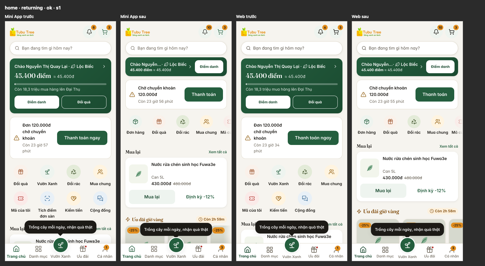
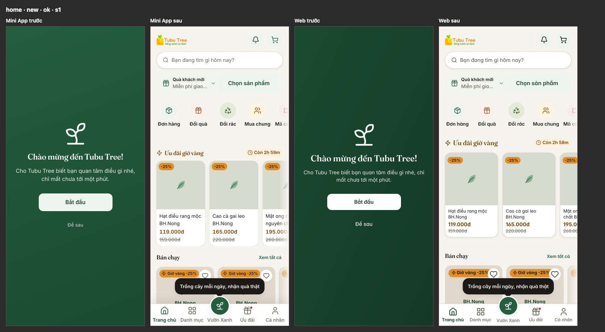
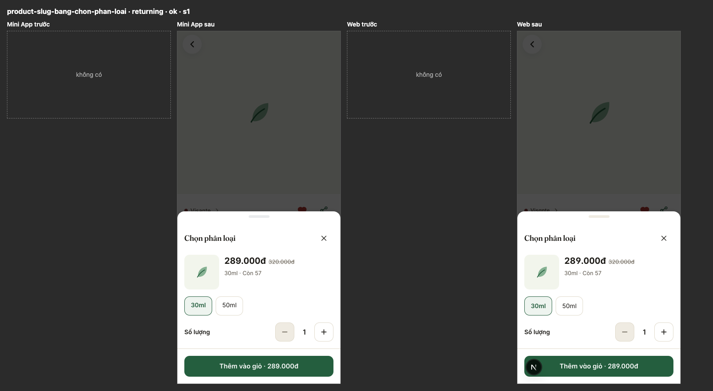
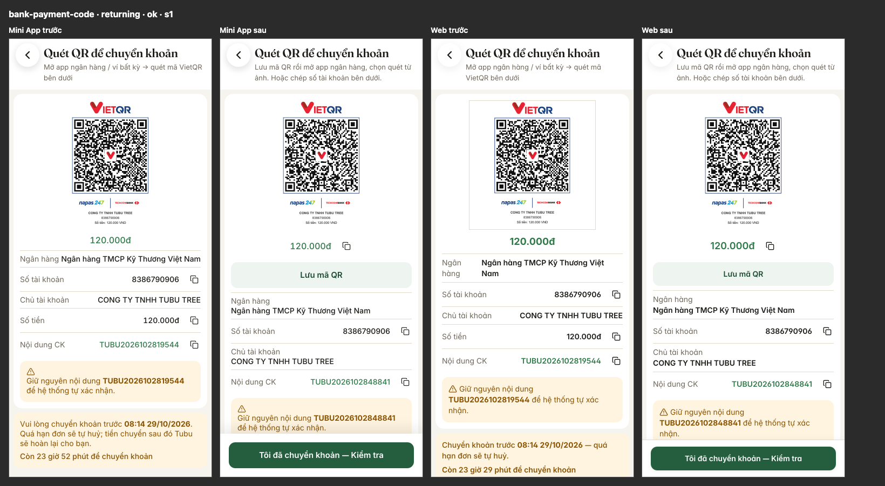
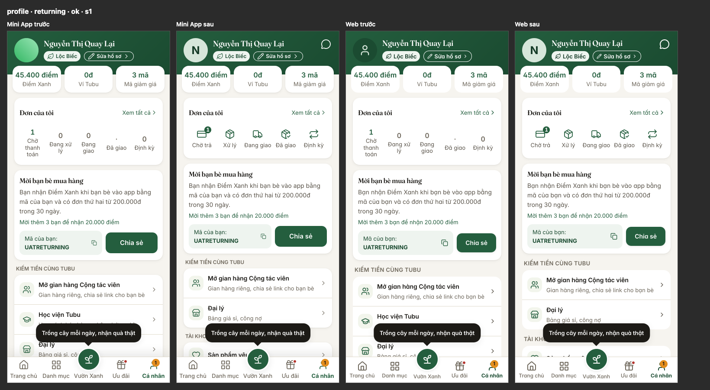
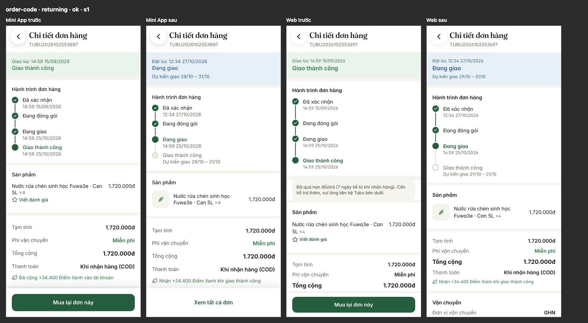
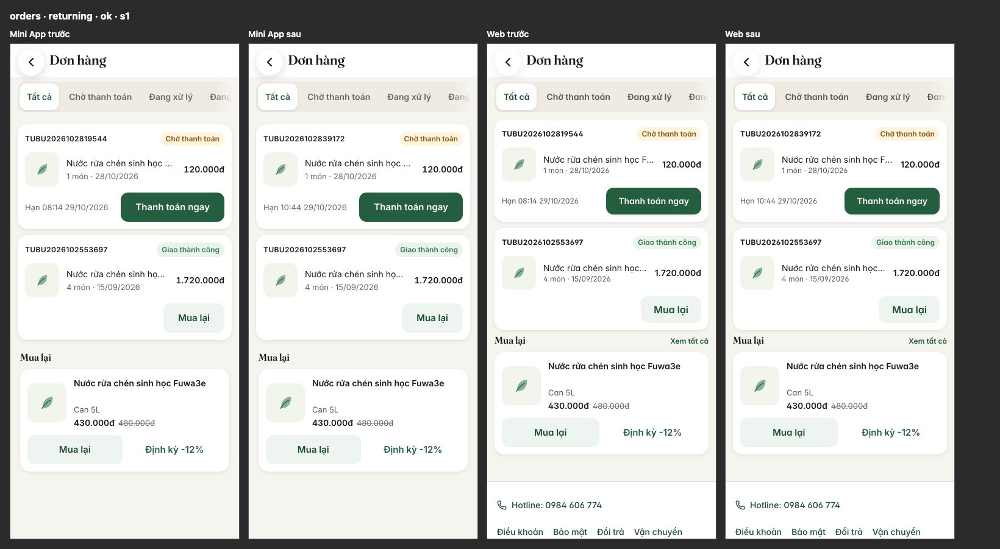
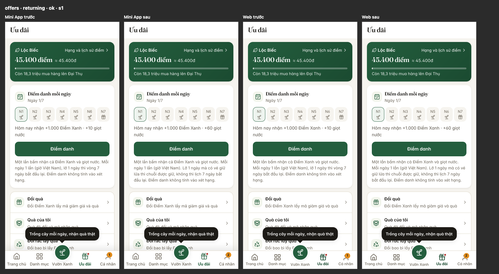
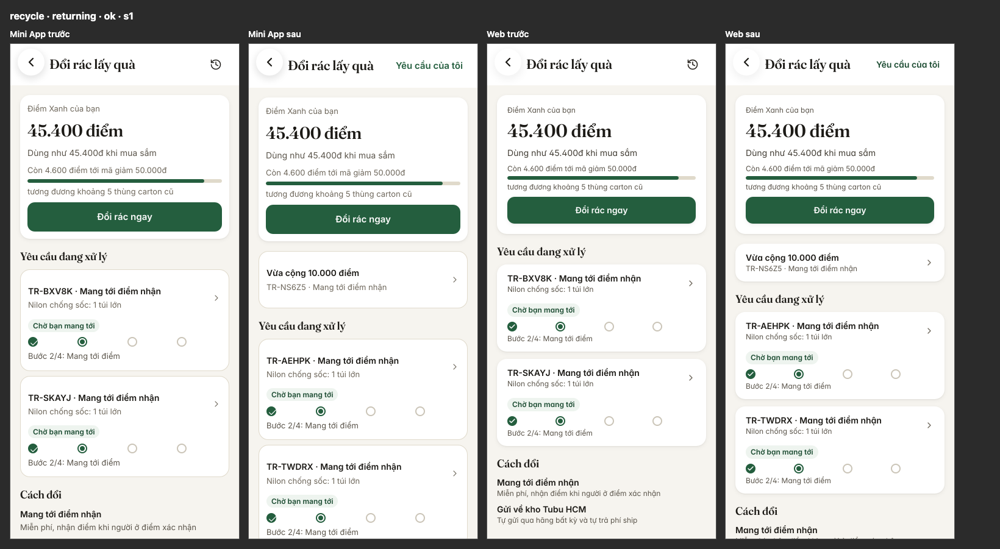
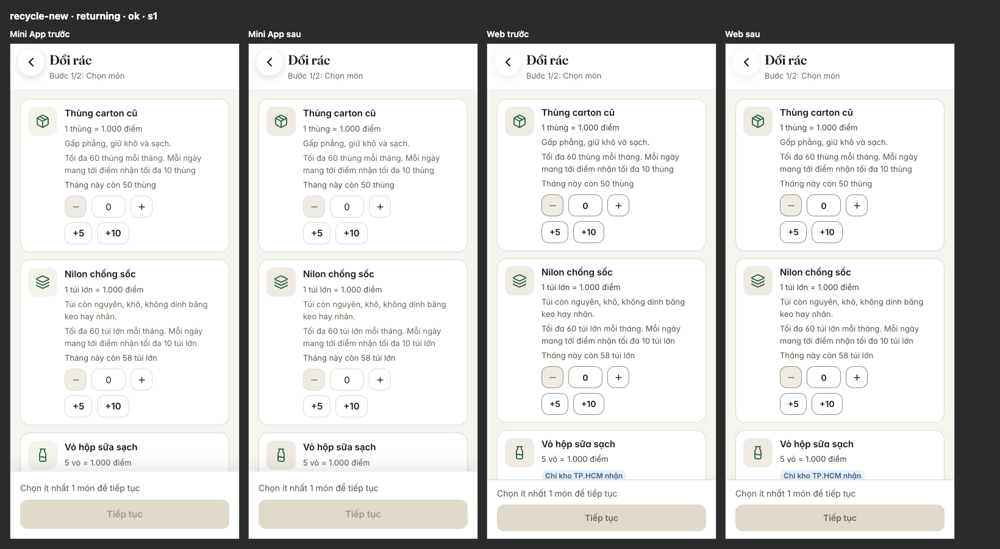
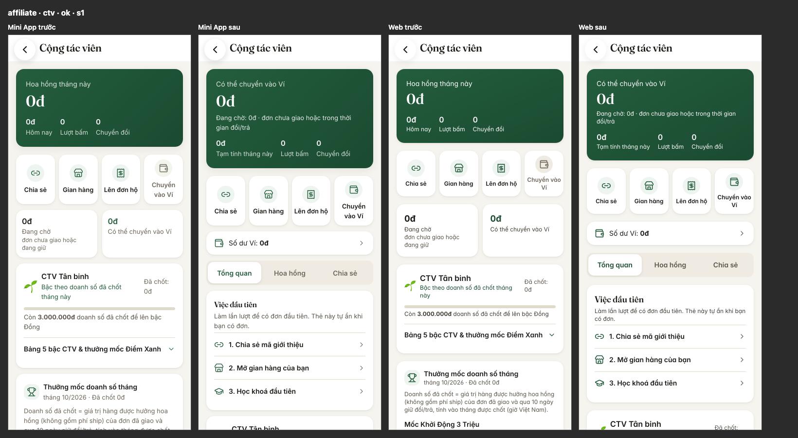
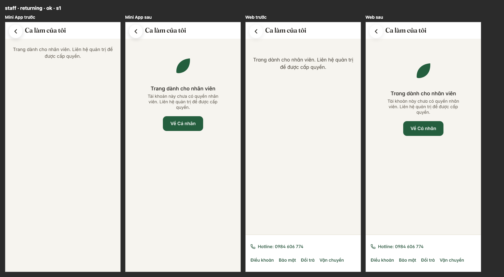
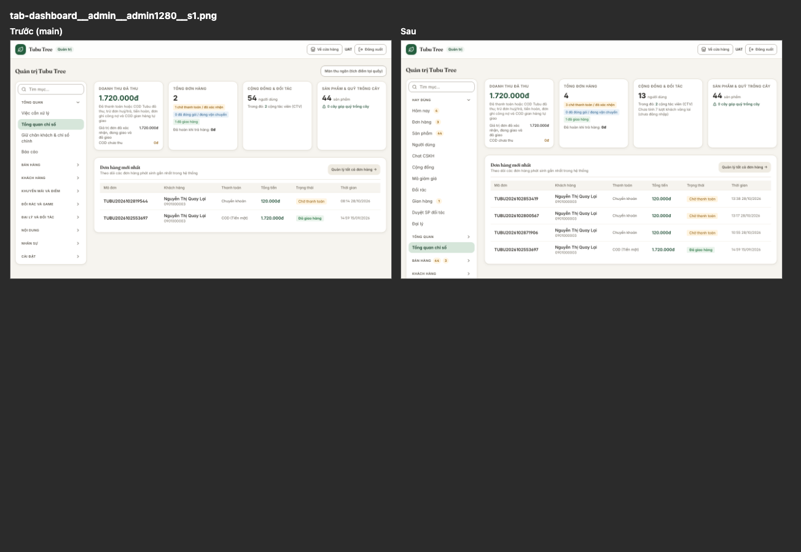
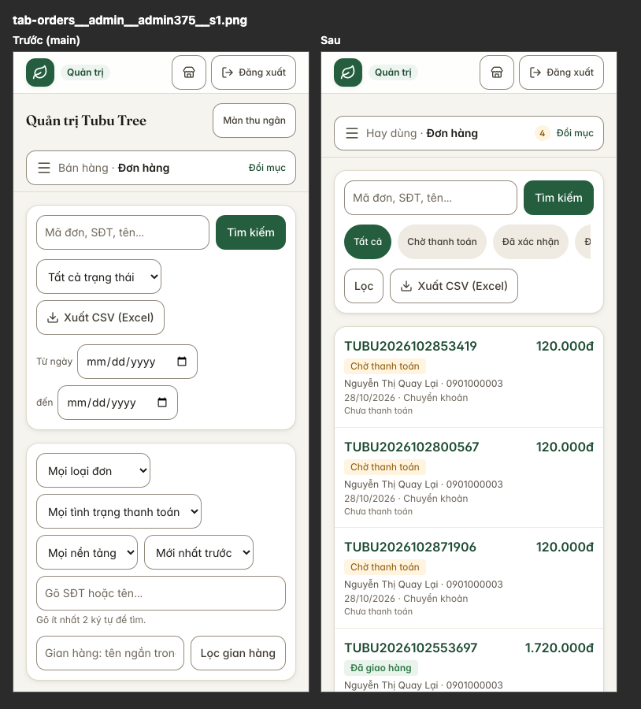
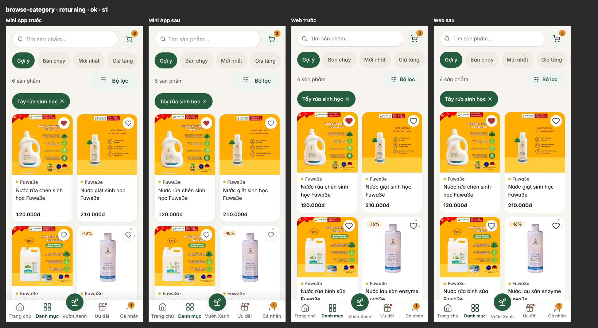
/img: nhìn như cũ, nhẹ hơn 22 lầnByte ảnh ở danh mục: 3.585 KB còn 162 KB. Đo ở Mini App 375, DPR 2, khách quay lại, cuộn hết trang.Rõ · Dễ · Đẹp · Nhanh · Bền, cùng thang với bản GĐ2. Điểm sau do người giao chấm lại. Chỉ đổi tiêu chí có mục R đã sửa xong; cột Nhanh lấy theo số đo ở dưới. Chưa có khách thật dùng thử.
| Màn | Mini trước | Mini sau | Web 375 trước | Web 375 sau | Đã sửa |
|---|---|---|---|---|---|
| home | 3·3·3·2·4 3,0 | 4·4·4·3,5·4 3,9 | 3·3·3·2·3 2,8 | 4·4·4·3,5·3,5 3,8 | R-2, R-3, R-4 |
| browse | 4·4·4·4·4 4,0 | như trước | 4·4·4·3·4 3,8 | 4·4·4·4·4 4,0 | R-17 |
| browse-category | 3·3·4·3,5·4 3,5 | 4·4·4·4·4 4,0 | 3·3·4·3·4 3,4 | 4·4·4·3,5·4 3,9 | R-89, R-5 |
| browse-search | 4·4·4·3,5·2,5 3,6 | 4·4·4·3,5·4 3,9 | 4·4·4·3·3,5 3,7 | 4·4·4·3·4 3,8 | R-14 |
| brand-slug | 2·2·4·4·2 2,8 | 4·4·4·4·4 4,0 | 4·4·4·4·4 4,0 | như trước | R-19 |
| brand-story | 3·4·4·4·4 3,8 | 4·4·4·4·4 4,0 | 3·4·4·4·4 3,8 | 4·4·4·4·4 4,0 | R-20 |
| about | 3·3·3·4·4 3,4 | như trước | 3·4·4·4·4 3,8 | như trước | Chờ anh/chị (R-1) |
| product-slug | 4·3·3·3·4 3,4 | 4·4·4·3,5·4 3,9 | 4·3·3·3·3 3,2 | 4·4·4·3·3 3,6 | R-6, R-5; R-24 còn |
| cart | 4·4·4·3,5·4 3,9 | như trước | 4·4·3·3,5·4 3,7 | như trước | /cart 18 → 13 câu SQL |
| checkout | 4·4·3·3,5·4 3,7 | 4·4·4·3,5·4 3,9 | 4·3·3·2·3 3,0 | 4·4·4·3,5·4 3,9 | R-7, R-22, R-23 |
| bank-payment-code | 3·2·3·4·4 3,2 | 4·4·4·4·4 4,0 | 3·2·3·4·4 3,2 | 4·4·4·4·4 4,0 | R-8 |
| group-buy | 3·4·4·4·4 3,8 | như trước | 3·2·4·4·4 3,4 | 3·4·4·4·4 3,8 | R-25 |
| orders | 4·4·4·4·4 4,0 | như trước | 4·4·3·3,5·4 3,7 | 4·4·4·3,5·4 3,9 | R-36 |
| order-code | 4·3·4·4·4 3,8 | 4·4·4·4·4 4,0 | 4·3·3·3·3 3,2 | 4·4·4·3·4 3,8 | R-9, R-35 |
| profile | 4·3·3·3,5·4 3,5 | 4·4·4·3,5·4 3,9 | 4·3·3·3·4 3,4 | 4·4·4·3·4 3,8 | R-33, R-34 |
| loyalty | 4·3·3·4·4 3,6 | 4·4·3·4·4 3,8 | 4·3·3·3·4 3,4 | 4·4·3·3·4 3,6 | R-37, R-41, R-42 |
| offers | 4·3·4·4·3,5 3,7 | 4·4·4·4·4 4,0 | 3·3·4·3·3,5 3,3 | 4·4·4·3·4 3,8 | R-10, R-37, R-43 |
| rewards | 4·3·3·4·4 3,6 | 4·4·3·4·4 3,8 | 4·3·3·4·4 3,6 | 4·4·3·4·4 3,8 | R-39 |
| game | 3·3·3·4·3,5 3,3 | 4·3,5·3·4·4 3,7 | 3·3·4·3·3,5 3,3 | 4·3,5·4·3·4 3,7 | R-37, R-45 một phần |
| recycle | 4·3·3·3,5·4 3,5 | 4·4·3·3,5·4 3,7 | 4·3·4·3,5·4 3,7 | 4·4·4·3,5·4 3,9 | R-47 |
| recycle-new | 4·3·4·4·4 3,8 | 4·4·4·4·4 4,0 | 3·3·4·4·4 3,6 | 3·4·4·4·4 3,8 | R-48, R-49, R-52 |
| recycle-rules | 2·3·3·4·3 3,0 | như trước | 2·3·3·4·3 3,0 | như trước | Chờ anh/chị (R-11) |
| recycle-requests | 3·3·3·4·2 3,0 | 4·3·3·4·4 3,6 | 3·3·4·4·3 3,4 | 4·3·4·4·4 3,8 | R-50, R-51 |
| chat | 4·3·3·3,5·4 3,5 | 4·4·3,5·3,5·4 3,8 | 4·3·3·3,5·4 3,5 | 4·4·3·3,5·4 3,7 | R-52, R-128 |
| feed | 3·3·3·4·4 3,4 | như trước | 3·3·3·4·4 3,4 | như trước | Chờ anh/chị (R-55) |
| academy | 3·3·3·4·4 3,4 | 3·3,5·3·4·4 3,5 | 3·3·3·4·4 3,4 | 3·3,5·3·4·4 3,5 | R-53 một phần |
| affiliate | 3·3·4·3,5·4 3,5 | 4·4·4·3,5·4 3,9 | 3·3·4·3·4 3,4 | 4·4·4·3·4 3,8 | R-12, R-59, R-60 |
| storefront | 3·3·3·4·3 3,2 | 4·3·3·4·4 3,6 | 3·3·4·4·3 3,4 | 4·3·4·4·4 3,8 | R-58 |
| s-slug | 4·3·4·4·4 3,8 | 4·4·4·4·4 4,0 | 4·3·4·4·4 3,8 | 4·4·4·4·4 4,0 | R-61 |
| dealer | 4·3·3·4·4 3,6 | 4·4·3·4·4 3,8 | 4·3·3·3,5·4 3,5 | 4·4·3·3,5·4 3,7 | R-62 |
| wallet | 4·3·4·4·4 3,8 | 4·4·4·4·4 4,0 | 4·3·4·3,5·3,5 3,6 | 4·4·4·3,5·3,5 3,8 | R-60 |
| staff | 4·3·3·4·3 3,4 | 4·4·4·4·4 4,0 | 4·4·4·4·4 4,0 | như trước | R-64, R-65 |
| cashback | – | – | 2·3·3·4·4 3,2 | Không còn màn này | R-44: web về trang chủ khi cờ tắt, như Mini |
| 404 | 4·4·4·5·5 4,4 | như trước | 4·4·4·4·5 4,2 | như trước | — |
| Trung bình | 3,5·3,2·3,5·3,8·3,7 3,5 | 3,8·3,8·3,7·3,9·4,0 3,8 | 3,5·3,2·3,5·3,5·3,8 3,5 | 3,8·3,8·3,8·3,6·3,9 3,8 | Dễ 3,2 → 3,8 (Mini), 3,2 → 3,8 (web) |
Đo bằng tools/perf/run-all.mjs ở main 9d0e95bd5 (trước) và bản gộp 8 nhánh 79d1bfaed (sau): web Moto G, Mini App 375, cả hai 4G chậm và CPU chậm 4 lần, API lane 5, 3 lần mỗi số, lấy trung vị. CLS từng ca Trang chủ đo thêm bằng tools/perf/home-probe.mjs. Lúc đo bản gộp máy tải 19,7 (lúc đo gốc 1,4), nên số thời gian của bản gộp có thể chậm hơn thật một chút; CLS và số byte không phụ thuộc tải. Dữ liệu lane không có ảnh sản phẩm, nên LCP Trang chủ web là chữ nhỏ tới sau: bóng gợi ý Vườn Xanh hiện trễ 1,5 giây (3.520 px²). Ở PROD, ảnh thẻ sản phẩm lớn hơn nhiều; chưa đo với ảnh thật. Độ trễ API chưa đo lại: công cụ bắn tải vào API lane 5, lane này chạy mã main.
| Phép đo | Trước | Sau | Mục tiêu | |
|---|---|---|---|---|
| CLS Trang chủ Mini, khách vãng lai | 0,828 | 0,066 | < 0,1 | Đạt |
| CLS Trang chủ Mini, khách quay lại | 0,456 | 0,000 | < 0,1 | Đạt |
| CLS Trang chủ web, khách quay lại | 0,416 | 0,000 | < 0,1 | Đạt |
| CLS Trang chủ web, khách vãng lai (Lighthouse) | 0,143 | 0,005 | < 0,1 | Đạt |
| CLS thanh toán web | 0,313 | 0,046 | < 0,1 | Đạt |
| Thẻ sản phẩm đầu tiên, Mini khách vãng lai | 2,2 s | 3,3 s | không chậm hơn | Chậm hơn (R-177) |
| Thẻ sản phẩm đầu tiên, Mini khách quay lại | 2,3 s | 2,6 s | không chậm hơn | Chậm hơn (R-177) |
| LCP Mini khách vãng lai: Danh mục / trang SP | 3,3 / 3,3 s | 2,4 / 2,6 s | ≤ 2,5 s | Gần đạt |
LCP /san-pham web (Lighthouse) | 4,4 s | 1,2 s | ≤ 2,5 s | Đạt |
Điểm Lighthouse /san-pham | 85 | 100 | ≥ 90 | Đạt |
| LCP Trang chủ web (Lighthouse) | 1,2 s | 6,0 s | ≤ 2,5 s | Đo trên dữ liệu không ảnh, xem trên |
| Điểm Lighthouse Trang chủ | 94 | 78 | ≥ 90 | Như dòng trên |
| LCP trang sản phẩm web (Lighthouse) | 4,5 s | 4,8 s | ≤ 2,5 s | Chưa làm (R-83) |
| FCP Mini App | 1,65 s | 1,65 s | không chậm hơn | Như cũ |
| Gói Mini App: entry (gzip) | 222 KB | 220 KB | không tăng | Đạt |
| JS Mini tải lúc mở Trang chủ | 222 KB | 330 KB | — | Có chủ ý: tải sẵn 4 màn mua hàng khi rảnh (R-79) |
| Byte ảnh Trang chủ Mini (ảnh thật) | 26,8 MB | 1,7 MB | — | Đạt |
| Byte ảnh Danh mục (ảnh thật) | 3,6 MB | 0,16 MB | — | Đạt |
Câu SQL /cart, lần gọi thứ hai | 18 | 13 | ≤ 8 | Chưa đạt với giỏ lane 5 (R-82) |
Câu SQL /home/me, lần gọi thứ hai | 18 | 19 | ≤ 12 | Chưa làm (R-82) |
| Lời gọi API của Trang chủ web | 21 | 19 | — | Bớt 2 |
20261028110000_welcome30_new_customer_only (đổi cờ mã WELCOME30), 20261028120000_tier_drop_notice (thêm cột rỗng được users.tierDropNoticeFor), 20261028130000_affiliate_auto_wallet_transfer (thêm dữ liệu cấu hình và mẫu tin).loyalty.tier_drop_zns_template_id), chỉ gửi tin trong app.IMAGE_CACHE_MAX_MB=200 vào .env PROD và kiểm df -h. Thử docker build image API vì có thư viện sharp mới. IMAGE_CACHE_DIR và IMAGE_RESIZE_EXTRA_HOSTS để mặc định.| Mục | Trạng thái | Còn lại |
|---|---|---|
| R-16 | một phần | Web trang chủ chưa dùng chung /home và /home/me |
| R-24 | chưa | Lỗi hydrate ở chi tiết SP web cho khách vãng lai chưa tái hiện được |
| R-53, R-54 | một phần | Dòng Học viện ở menu tài khoản; khung chờ khi tải màn Mini App |
| R-56 | một phần | Web cho đọc Cộng đồng và chat khi chưa đăng nhập cần API đọc công khai |
| R-70, R-75, R-148, R-149 | gói sau | Admin cần API đếm theo trạng thái |
| R-77 | một phần | Entry Mini 711 → 706 KB (bản gộp), đích 600 KB: tách vi.ts, tải lười khối trang chủ |
| R-82 | một phần | /home/me còn 17–19 câu SQL, đích 12; /cart 13 câu với giỏ lane 5, đích 8 |
| R-83 | chưa | Khung chờ trang sản phẩm web mà vẫn trả 404 đúng |
| R-97, R-110, R-111 | một phần | Popup chi tiết hạng; ô ngày sinh; "Xoá tài khoản" chỉ ở Cài đặt |
| R-156..R-177 | mới | 22 mục P2/P3 phát hiện khi review: quà khách mới khi mất mạng (P2), món hàng Mini hiện chậm khoảng 1 giây ở lần mở đầu (P2), ô ngày admin, tin ZNS khi hàng đợi lỗi, khoảng hở giữ hạng, giới hạn /img theo IP. Chi tiết ở 20-backlog.md. |
company.legal_name, tax_code, address; duyệt 4 trang chính sách (go-live còn FAIL company_identity).shipping.eta_min_days, shipping.eta_max_days để ngày giao dự kiến hiện.Nguồn: docs/2026-10-28-review/ trên nhánh review/2026-10-28: 20-backlog.md, reviews/, pr/, perf/. Số kiểm do người giao tự chạy lại bằng tools/gate.sh và tools/pw-gate.sh, không lấy theo lời worker.